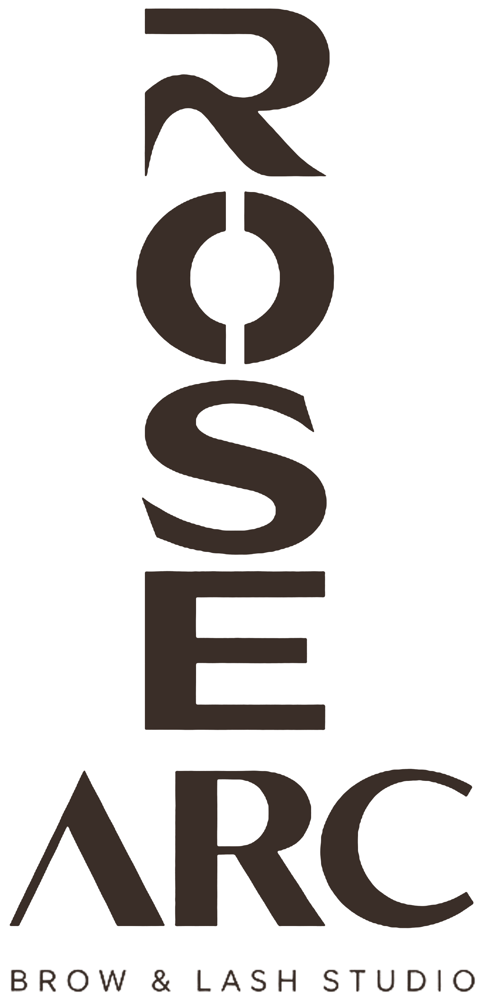
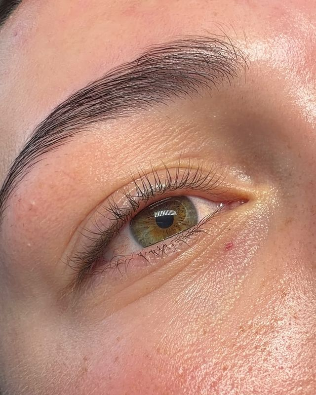
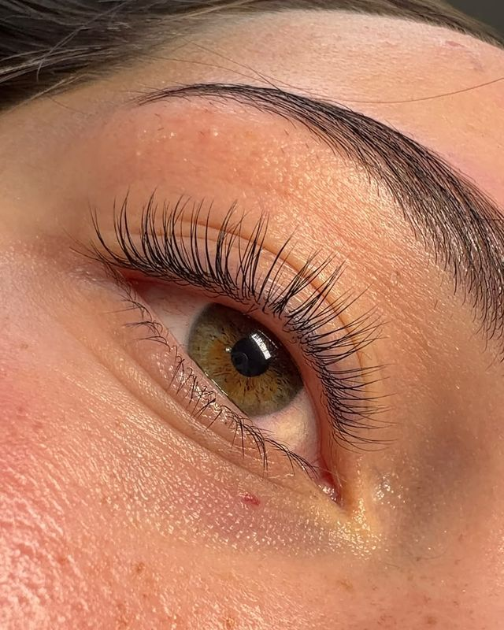
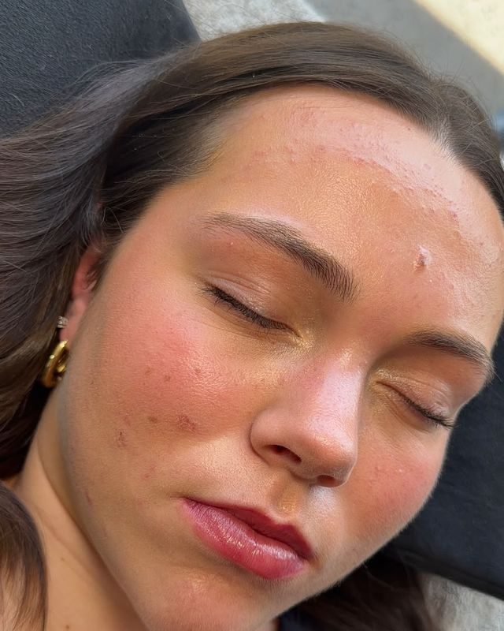
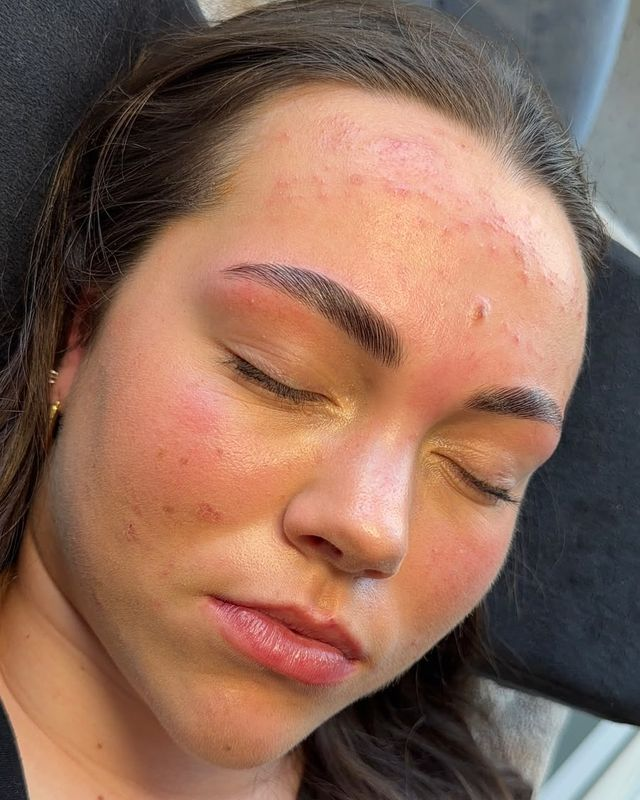
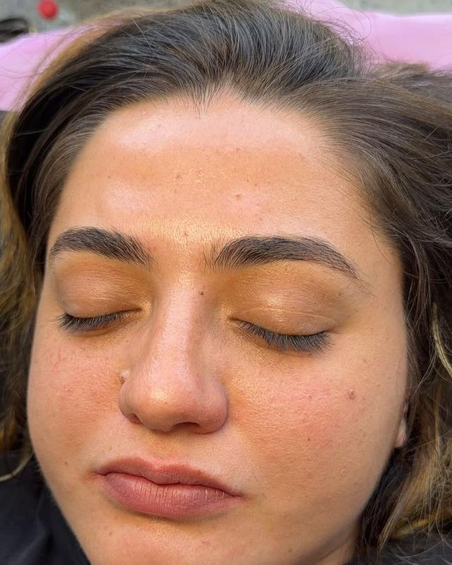
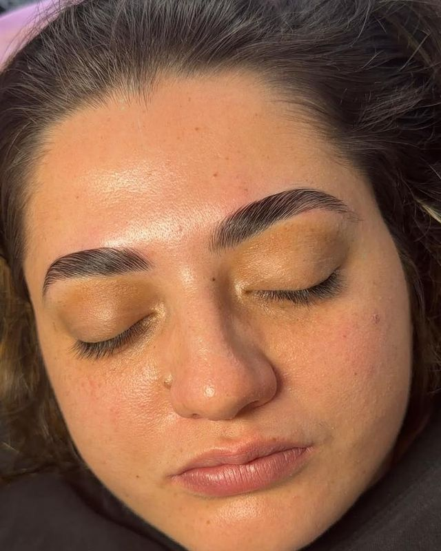
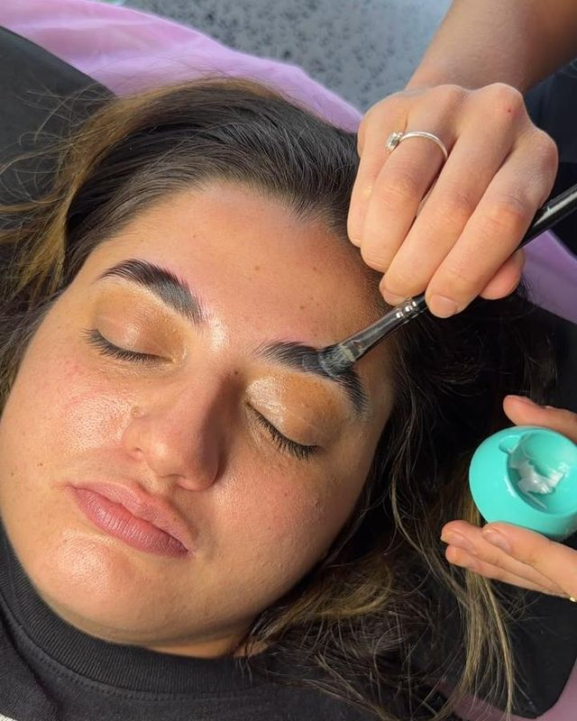
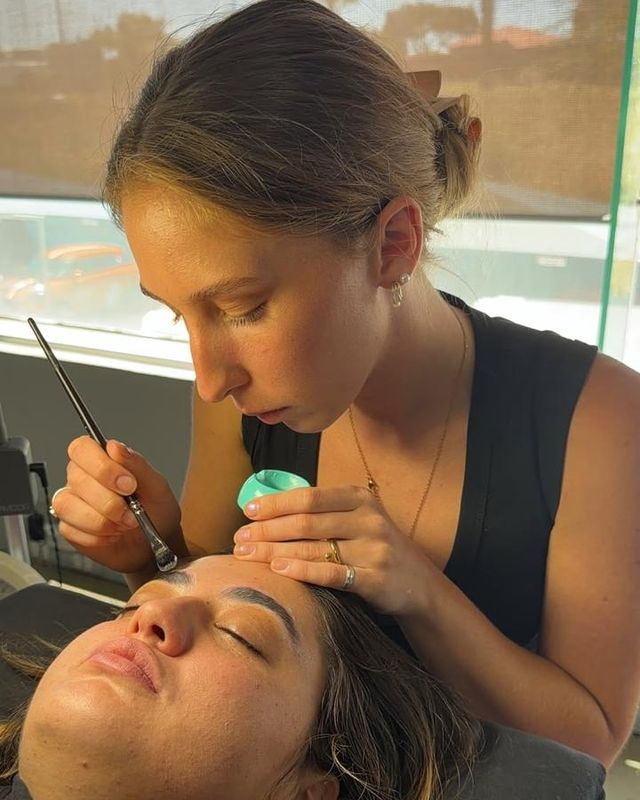
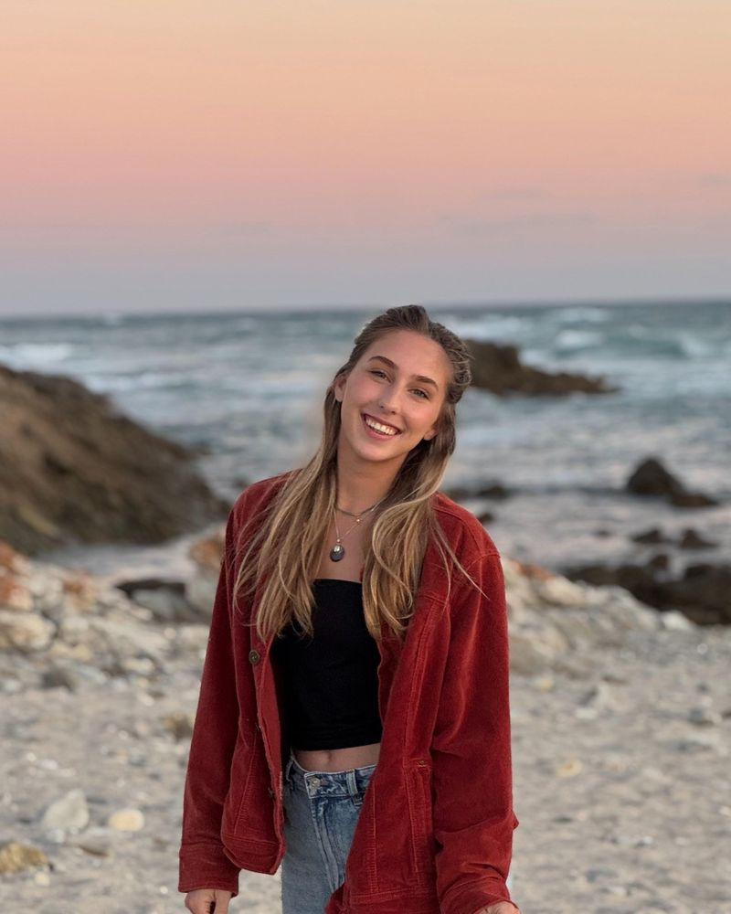

Brows & lash lifts, done with care.
Soft, lifted lashes and brows shaped to suit your face, by Mia Rose, InLei® certified brow and lash artist. Natural results that still look like you, only better rested. Welcoming clients from Jeffreys Bay, St Francis Bay, Humansdorp and the wider Kouga area.

Services & prices
Every appointment starts with a chat about the look you want. Not sure what to book? Send a message and Mia will help you choose.
Before & after
Real clients, real results from the Rose Arc studio. No filters, just good brows and lifted lashes.









A thing for good brows
Rose Arc is a brow and lash studio in Jeffreys Bay, run by Mia Rose. Mia is an InLei® certified brow and lash artist, and she works one-on-one with every client, so you are never rushed.
The aim is simple: brows and lashes that suit your face and make your mornings easier. Results that look natural up close and last between visits.
- InLei® Certified Brow & Lash Artist
- One client at a time, in a calm studio
- Honest advice on what will work for you
Mia Rose
What to expect
From booking to aftercare, here is how a visit to Rose Arc works.
Book
Send a message with the treatment you want and a few days that suit you.
Consult
We talk through the look you want, check your skin and lashes, and agree on a plan.
Treatment
Lie back and relax. Most treatments take under an hour.
Aftercare
You leave with simple aftercare tips so your results last as long as possible.
Questions, answered
How long does a Korean lash lift last?
Usually around 6 to 8 weeks, depending on your natural lash growth cycle and how you care for them afterwards.
How long does brow lamination last?
Results last 6 to 8 weeks. After 3 consecutive lamination sessions, it is advised to take a 2-month break so your brow hairs can complete their full growth and renewal cycle. Between laminations, a brow lamination maintenance appointment keeps them healthy and in shape.
How should I prepare for my appointment?
Come with clean skin and no eye or brow makeup if you can. For brow treatments, avoid brow growth serums for at least 2 weeks before, and pause retinol, exfoliating acids (AHAs/BHAs) and acne treatments such as benzoyl peroxide or salicylic acid for at least 48 hours before, as these can make the skin more sensitive. If you wear contact lenses, bring your case so you can take them out for lash treatments.
I live in St Francis Bay or Humansdorp. Where is the studio?
The studio is at 22 Schelde Street, Jeffreys Bay, an easy drive from St Francis Bay, Cape St Francis, Humansdorp and the rest of the Kouga area. Appointments run Monday to Friday 07:30 to 17:00 and Saturday mornings 08:00 to 12:00, so it is easy to fit a visit around work or a weekend in town. Get directions.
What happens before my appointment?
Before your appointment, Mia will send you a short consultation message to ask about allergies, skin sensitivities and anything else she should know. If anything needs a closer look, she will let you know before your treatment. Please mention any allergies when you book.
How do I pay, and what if I need to cancel?
The full price is paid on the day of your appointment, by card or cash (card preferred). If you need to cancel or reschedule, please let Mia know at least 24 hours in advance so she can offer the spot to another client. Booking info.
Is a lash lift the same as lash extensions?
No. A lash lift curls and lifts your own lashes. Nothing is glued on, so there are no infills and your lashes stay light and natural.
Ready for good brows?
Bookings are by appointment only. WhatsApp Mia with the treatment you want and your preferred days, and she will get back to you to confirm.
Studio
22 Schelde Street
Jeffreys Bay, Eastern Cape
An easy drive from St Francis Bay, Cape St Francis and Humansdorp
Hours
| Mon – Fri | 07:30 – 17:00 |
|---|---|
| Saturday | 08:00 – 12:00 |
| Sunday | Closed |
By appointment only
Payment
The full price is paid on the day of your appointment, by card or cash. Card is preferred.
Cancellations
Need to cancel or move your appointment? Please let Mia know at least 24 hours in advance, so she can offer your spot to another client. Thank you for your understanding.